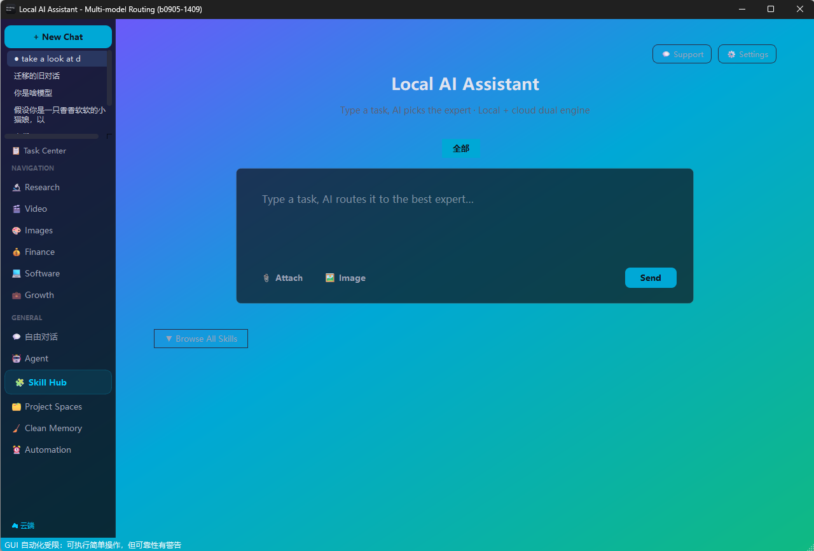

它能做什么
一个输入框，连通所有模型
不用记 API、不用开一堆网页。DeepSeek、Qwen、GLM、Kimi、MiniMax、豆包、混元、文心、Grok，以及 OpenRouter 上的全量模型，都在同一个下拉框里；本地 Ollama 装的模型也在一起。
主通道 + 兜底通道，双活互备
OpenRouter 作主力通道，七牛云或你自填的国内平台作兜底。某条通道限频、5xx、没配 Key、甚至整个挂掉，系统自动把请求交给另一条通道的同类模型继续跑——对话不中断，只会看到「已自动切换」。
地区受限模型自动识别与跳过
部分地区账单地址拿不到 OpenAI / Anthropic / Google 的闭源模型。客户端启动时用最小请求实测一次（花费≈$0）并把结果落盘，受限模型在下拉框标「🚫 地区受限」，自动选模也会绕开它们，不再把时间浪费在必然失败的调用上。
14 个国内直连平台，预设一键切换
硅基流动、阿里云百炼、DeepSeek 官方、火山方舟、智谱、Kimi、MiniMax、腾讯混元、魔搭、302.AI、DMXAPI、AIHubMix、NVIDIA NIM、阶跃星辰。选中即自动带出 Base URL，粘上 Key 就能用，不用翻文档抄地址。
本地优先，断网也能跑
接上 Ollama 即可完全离线：对话、文件操作、工作流编排都不依赖网络，数据不出本机。
五档会员 × 多类用途矩阵
免费 / 标准 / 专业 / 旗舰 / 极限五档，各档解锁不同模型池；模型按通用 / 推理 / 代码 / 视觉 / 音乐分类，系统按任务类型自动挑，也能手动锁定任意一个。
模型状态一目了然
下拉框里每个模型都带状态标记：「🔒 需 OpenRouter Key」说明缺哪把钥匙，「🚫 地区受限」说明这个地区用不了。可用的排最前，需要补 Key 的沉底，不用一个个点开试。
同一会话实时切换
聊到一半换模型，上下文不丢——真正意义上的「随手换脑子」。
怎么用
- 1设置 → 云端模型，把要用的通道 Key 填上（OpenRouter、硅基流动、DeepSeek 官方等，填几家就有几家可用）。
- 2需要离线就把本地 Ollama 打开，客户端会自动发现本地模型。
- 3在顶部模型下拉里选具体模型，或直接用「自动路由」让它自己挑——缺 Key、地区受限的模型会被自动跳过。
- 4模型带「· 兜底」标记的，会在主通道失败时自动接手，无需手动干预。
- 5断网时自动落到本地模型，联网后自动恢复云端。
技术亮点
- 统一 cloud_client 抽象层：本地 / 云端 / 各家国内平台共用同一套调用签名，接一个新平台只需一条 base_url + Key。
- 双通道路由：同名模型 id 在两条通道都存在时（DeepSeek V4 Pro、GLM 5.3、Kimi K3 这类），按「哪条通道配了 Key」+ 通道优先级动态选边。
- Key 不跨通道借用：七牛云的 Key 绝不会被打到 OpenRouter 上——这条修复消掉了一类「报 401 说 Key 过期、其实根本没配」的假故障。
- 429 区分「限频」与「余额不足」：限频读 Retry-After 退避重试，余额不足立即停并提示充值；403 判定地区封锁后直接切兜底模型。
- 启动时后台拉取 OpenRouter 公开目录（400+ 模型），实时刷新价格与上下文窗口；目录拉取本身不需要 Key。
- 模型元数据自带上下文窗口 / 单价 / 起解锁档位，自动选模在「类别匹配 + 档位达标」基础上按价格打分，同价位优先便宜的。
看一眼
